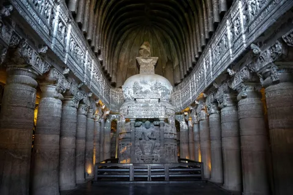
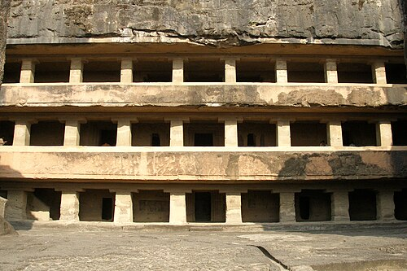
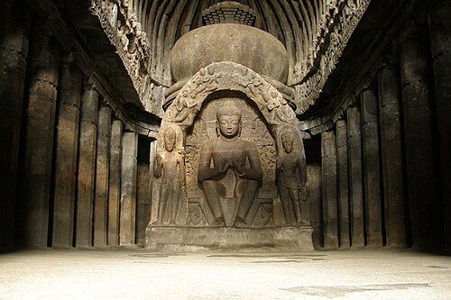
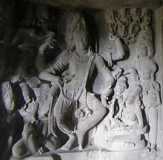
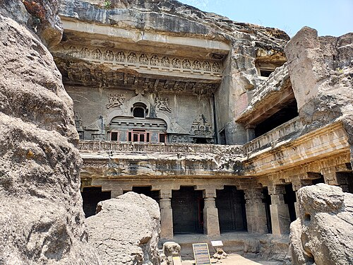
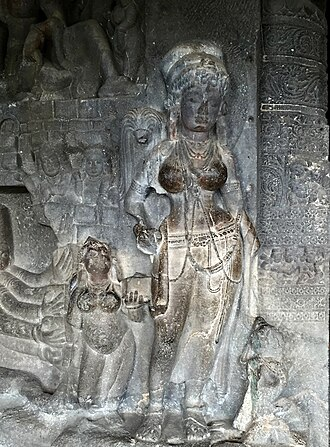

Where history and artistry are carved in stone
Ellora Caves, a UNESCO World Heritage site, symbolize India's remarkable rock-cut architecture spanning Buddhist, Hindu, and Jain faiths between the 6th-10th centuries CE. The magnificent Kailasa Temple stands as a testament to ancient engineering brilliance, carved from a single rock.
chh.Sambhaji Nagar in Maharashtra, India, are a UNESCO World Heritage Site renowned for their remarkable rock-cut architecture and intricate sculptures. Spanning from the 6th to the 10th century, these 34 monasteries and temples were carved into the basalt cliffs of the Charanandri Hills, showcasing a harmonious blend of Buddhist, Hindu, and Jain






These caves are located on the southern side and were built either between 630 and 700 CE, or 600-730 CE.It was initially thought that the Buddhist caves were the earliest structures that were created between the fifth and eighth centuries, with caves 1-5 in the first phase (400-600) and 6-12 in the later phase (650-750), but modern scholars now consider the construction of Hindu caves to have been before the Buddhist caves. The earliest Buddhist cave is Cave 6, then 5, 2, 3, 5 (right wing), 4, 7, 8, 10 and 9, with caves 11 and 12, also known as Do Thal and Tin Thal respectively, being the last.[63]
These caves are located on the southern side and were built either between 630 and 700 CE, or 600-730 CE.It was initially thought that the Buddhist caves were the earliest structures that were created between the fifth and eighth centuries, with caves 1-5 in the first phase (400-600) and 6-12 in the later phase (650-750), but modern scholars now consider the construction of Hindu caves to have been before the Buddhist caves. The earliest Buddhist cave is Cave 6, then 5, 2, 3, 5 (right wing), 4, 7, 8, 10 and 9, with caves 11 and 12, also known as Do Thal and Tin Thal respectively, being the last.[63]
Caves 5, 10, 11 and 12 are architecturally important Buddhist caves. Cave 5 is unique among the Ellora caves as it was designed as a hall with a pair of parallel refectory benches in the centre and a Buddha statue in the rear.[64] This cave, and Cave 11 of the Kanheri Caves, are the only two Buddhist caves in India arranged in such a way.[8] Caves 1 through 9 are all monasteries while Cave 10, the Vīśvakarmā Cave, is a major Buddhist prayer hall.[8]
The Jain monument: caves(30-34): These caves are located on the southern side and were built either between 630 and 700 CE, or 600-730 CE.It was initially thought that the Buddhist caves were the earliest structures that were created between the fifth and eighth centuries, with caves 1-5 in the first phase (400-600) and 6-12 in the later phase (650-750), but modern scholars now consider the construction of Hindu caves to have been before the Buddhist caves. The earliest Buddhist cave is Cave 6, then 5, 2, 3, 5 (right wing), 4, 7, 8, 10 and 9, with caves 11 and 12, also known as Do Thal and Tin Thal respectively, being the last.[63]
Caves are architecturall